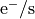

Examples
- 1. Generate a LePhare configuration file
- 2. Resolved stellar mass map with LePhare
- 3. Resolved SFR map from an already existing LePhare output file
----------------------------------------
Tutorial introduction¶
This page gives a general overview of the behaviour of this library. For using a specific SED fitting code, please visit the following pages
Important
This library is built to easily generate resolved maps of SED fitting codes output parameters performing pixel per pixel SED fitting on multi-band images.
The functions and classes provided here are built to work on a single resolved object.
If you need to generate resolved SED-based maps for many galaxies, then you must loop on those objects rather than trying to do them all at once.
Nomenclature¶
We briefly give below a description of the different classes/terms used in the following.
Class/term |
Description |
|---|---|
An intermediate object which contains preprocessed data to generate the SED fitting code configuration file |
|
Object which stores data and variance map information relative to a single filter |
|
Object which stores all the |
|
Abstract object which can read output data from the SED fitting codes and produce resolved maps |
|
Abstract object which includes methods to run the SED fitting code and read its output data |
Pre-processing step¶
This library does not apply any pre-processing step onto the different multi-band images except those required so that the SED fitting codes work properly. Namely, this library assumes the following:
All images have the same shape. If not, it will raise an Exception
All images have the same pixel size and the same resolution (PSF)
All images share the same centre
All images have a corresponding variance map (square of error - similar shape). This map can include or not the noise from Poisson statistics.
All images are supposed to be in units of 
Optionally, if one wants to add Poisson noise to the data, then the TEXPTIME keyword must be present in the header of the loaded data.
Step 1: Building Filter and FilterList objects¶
To simplify the handling of FITS data files, each single-band image and its associated variance must be loaded into a Filter object. Each Filter object loads the data and variance, as well as their corresponding headers, and perform simple checks on data shape and useful header keywords.
import SED
name = '1'
file = f'example/{name}_105.fits'
var = f'example/{name}_105_variance.fits'
zpt = 26.27
filt = SED.Filter(name, file, var, zpt, ext=0, extErr=0)
Four parameters have to be provided:
name : Name of the filter. This name will be used later on when constructing the data table for the SED fitting code.
file : Data file name
var : Variance map file name
zpt : Zeropoint corresponding to the filter. This zeropoint is used to convert the data and error maps from to magnitude or flux values.
Optionally, if the data and/or variance maps have multiple extensions, one can provide the extension number with the ext and extErr keywords.